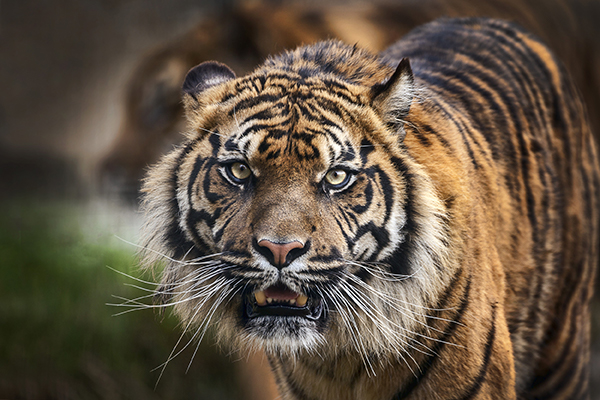

Bengal Tiger
Bengal tigers are the national animal of both Bangladesh and India.
 One of the most wondrous and iconic animals to walk the Earth, Bengal tigers are majestic and rare. They're also one of the biggest cat species in the world. On average, Bengals are larger than other tiger species, but the largest tiger ever recorded was a Siberian. As such, Bengals are considered the second largest tiger species.
Today, wild Bengal tigers are animals that only live in Bangladesh, Bhutan, India, and Nepal. And while there are more Bengals than any other tiger subspecies on the Indian subcontinent, the populations are endangered.
Conservation efforts are working to some degree, but they're not outpacing the poaching, deforestation, and human encroachment that has devastated wild tiger habitats over the past 50 years.
Fascinating Facts About Bengal Tigers
- Human residents of jungle villages that share space with large cats wear face masks on the back of their heads because tigers prefer to attack from behind. If the felines think a person is looking directly at them, they typically find another target.
- Between the late 1800s and early 1900s, a female Bengal tiger known as the "Champawat tiger" killed 436 people around Nepal and Kumaun. After an autopsy, scientists realized her canine teeth were damaged, which prevented her from catching normal prey.
- It is believed that these tigers will coordinate attacks against larger prey like rhinoceros and elephants.
- Scientists believe Bengal tigers arrived in India between 12,000 to 15,000 years ago.
- In 2019, a Bengal tiger named Ming, a 19-year-old tiger that sadly spent most of his life living in a New York City apartment, passed away. It was discovered that Ming's human companion, Mr. Yates, fed him about 20 pounds of chicken meat a day and turned one room in the apartment into a sandpit for his “best friend.”
Bengal Tiger Scientific Name
During the 19th century, these tigers were known as Royal Bengal tigers. Somewhere along the taxonomic line, however, the royal was dropped. Today, the animals are simply known as Bengal tigers, a population of the subspecies Panthera tigris tigris.
Panthera derives from the Lain word “panthēra” and the Greek word “pánthēr,” which both roughly translate to “that which is hunted.” The Sanskrit word “pând-ara,” meaning “pale yellow, whitish, white,” is also thought to play a role in how the animal got its name.
Bengal Tiger Appearance
Bengal tigers are one of the biggest subspecies of cats roaming the Earth today.
The majority of these tigers sport yellow to light orange coats with brown to black stripes, but their bellies and the inward-facing sides of their limbs are white.
How Big are Bengal Tigers?
Male tigers are typically between 9 to 10 feet long, including the tail, and about 3 to 3.5 feet tall from the ground. On average, boy Bengals tip the scale between 397 and 569 pounds — which is about the same weight as a pig and half as heavy as a polar bear!
Females are slightly smaller than their male counterparts. They're usually between 7.5 to 8.5 feet long, and while the same height as the males, only weigh about 220 to 350 pounds, about the same size as a reindeer.
Compared to other tiger species, Bengals are usually slightly larger.
bengal tigers (Panthera tigris tigris) bengal tiger laying down
What is a White Bengal Tiger?
Every so often, a Bengal tiger is born with an all-white coat with brown to black stripes. These “white Bengal tigers” tend to grow faster and larger than their yellow and orange peers.